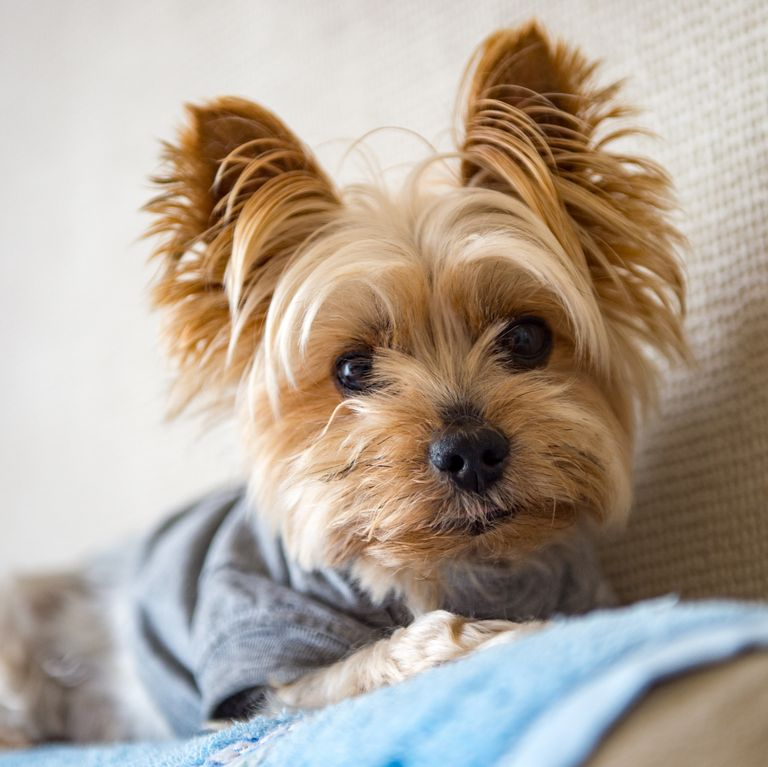
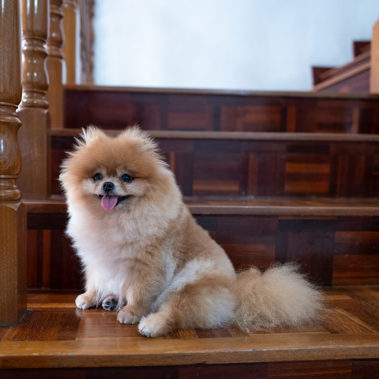
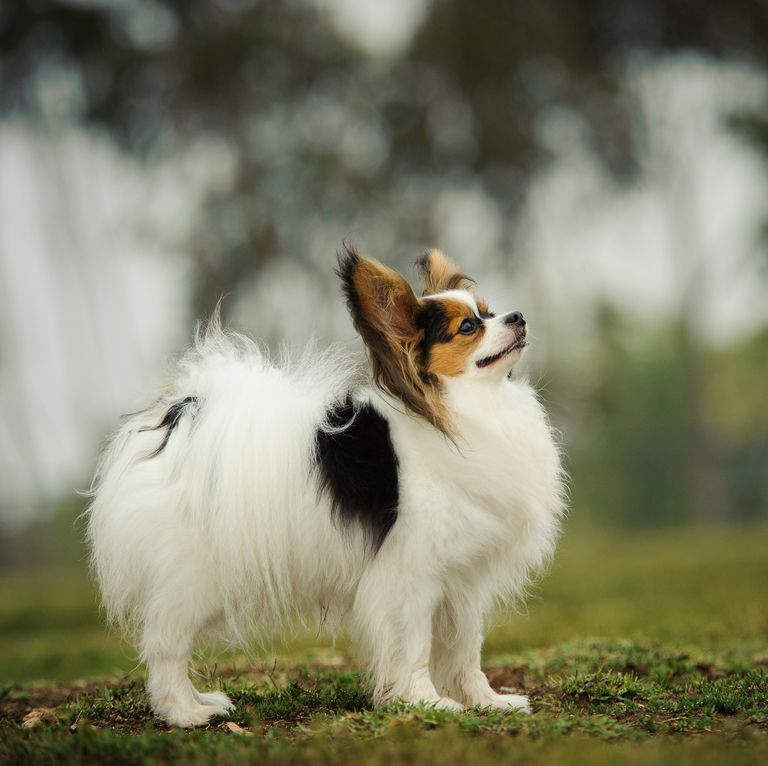
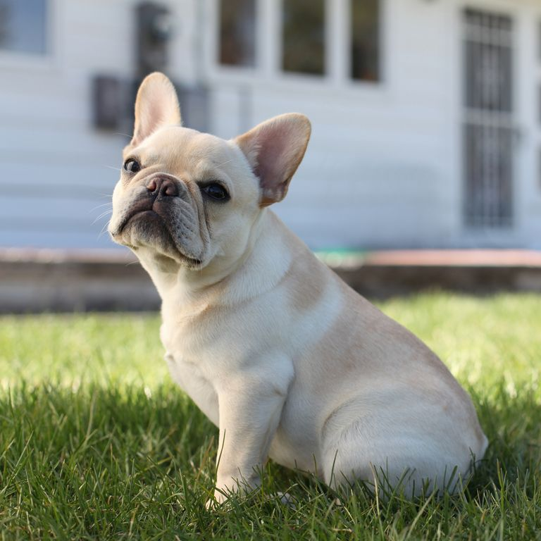
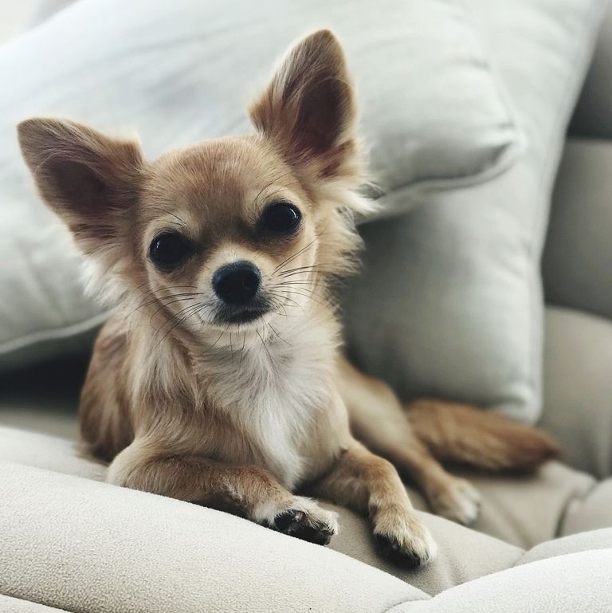
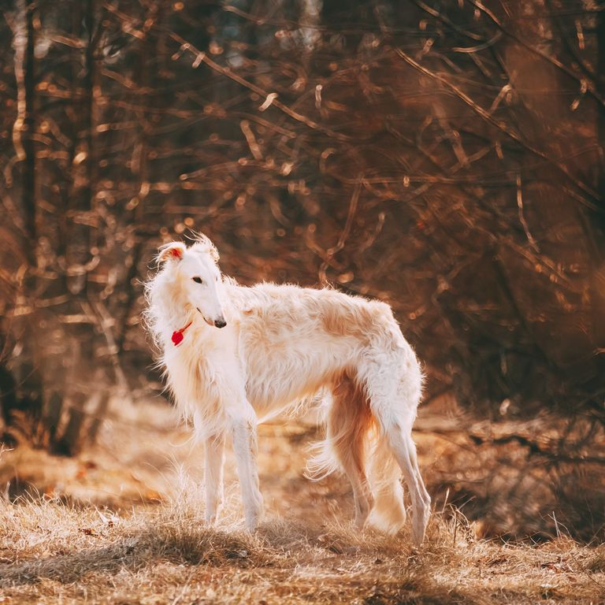
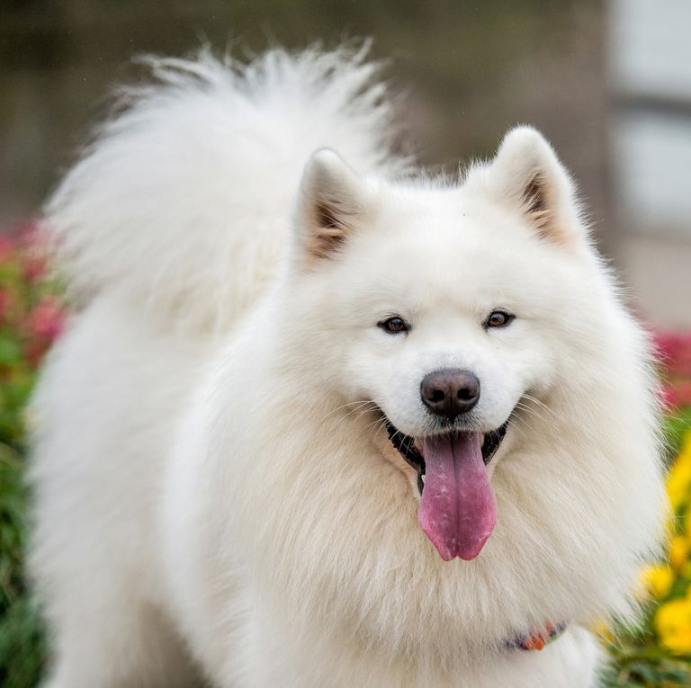
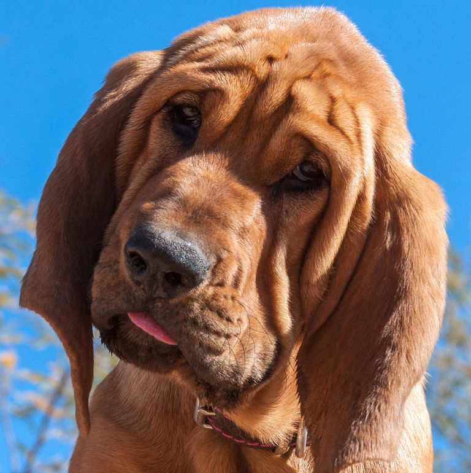
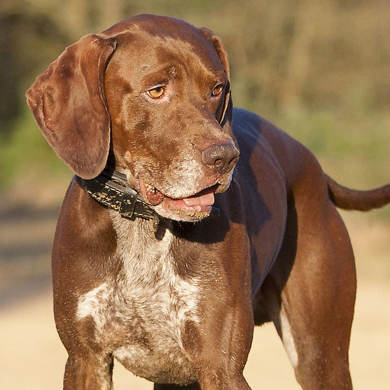

Dog Breeds For You
Looking for a dog or planning to get one? Here are a few dog breeds you should know about: their personalities and traits you should know about.


Shih Tzus
Shih Tzus are cuddly and affectionate companions. Beware of the big brown eyes that you won't be able to say no to. They were bred to be house companions, according to the American Kennel Club, so they don't need too much exercise, making them perfect for someone with a busy work schedule or limited mobility. Shih Tzus are affectionate, happy, outgoing house dogs who love nothing more than to follow their people from room to room.
Scottish Terrier
Scottish Terriers, or Scotties, are easy to recognize since their inclusion as one of the classic game pieces in Monopoly. As would make sense for a dog so strongly associated with a game, these dogs love to play and have a lot of energy.Families will have no trouble getting affection from their Scotties, but strangers might have to work for it. The dogs are naturally wary of new people and it takes them a while to come around.

Pomeranian
These dogs are basically giant fluff-balls. Their adorable faces are hidden in a poof of fur, and they're a lively breed.Pomeranians are known for being smart, curious, energetic, feisty, and bold. They are typically very playful and love to be the center of attention.They do have a reputation for being a bit chatty, so if you're looking for a quiet, chill dog, a Pomeranian might be a bad choice.

Papillon
These dogs get their name from their perky, wing-like ears that look like a butterfly. They're known for being exceptionally smart dogs and easy to train.Papillons are generally outgoing, happy dogs that enjoy sitting in laps as much as they like running around the house. Although lively and energetic, they are not considered high-strung, nervous or fearful, and they do not bark excessively.
Miniature Pinscher
These small dogs are known for having big personalities. They love to have fun and need an ample amount of exercise. Say hello to your new workout buddy. Miniature Pinschers are true terriers when it comes to their temperament. Min Pins may be small in size, but their temperament is alert, dynamic, bossy and fearless.

French Bulldog
As the French Bulldog breed became popular in France many, many years ago, it's possible that they once crossed with terriers and Pugs, so it's no wonder the two look so similar. However, the best way to tell the two apart is the French Bulldog's bat-like ears, domed skull, and hatred for exercise. Overall, French Bulldogs are well-tempered, friendly animals whose worst temperamental flaw is that they can have a stubborn streak.

Chihuahua
Quite possibly the sassiest of them all (and maybe the tiniest!), Chihuahuas own the name "purse dog" with pride. These tiny dogs don't grow any bigger than 8 inches and have a hard time exceeding 6 pounds! They're the perfect city pet, but will need some extra bundling up during the cold winter months.
Australian Shepherd
Australian Shepherds are closely associated with rodeo and cowboy life, and they're well known for their multicolored eyes and coats. Aussies are herding dogs and have an abundance of energy, so they're not great for owners who want a more relaxed pet, according to the American Kennel Club.They are in the top twenty most liked dog breeds. It's no wonder they are so popular. Naturally affectionate, these sweet-natured dogs are lovely to pet and hug. For the most part, the Australian Shepherd loves to cuddle – its in their nature.

Borzoi
These tall, skinny dogs might not look the most cuddly, but they have a reputation for being affectionate and loyal, according to AKC. Like most sighthounds, borzoi are very sensitive and are one family dogs. They are friendly, but not gregarious, toward strangers. They are adequate watchdogs, and will bark. Fun fact: These active dogs can run up to 35-40 miles per hour. Speedy!

Samoyed
These fluffy white dogs are known for their joyous smiling faces. They're kind and gentle, according to the AKC, and they need a good bit of exercise, making them perfect for an active family.Samoyeds tend to get along well with other dogs as well as people and with other pets they are raised with. They are herding dogs and may show some tendency to chase or nip. In general, they get along well with children, although they can be a little boisterous for small toddlers.
Alaskan Malamute
These beautiful dogs are strong and energetic, according to the AKC. They love to play and enjoy running around, so they aren't a great fit for someone who's looking for a dog to relax with. Alaskan Malamutes are very patient dogs, they are very powerful as well, so they can withstand various games with children.

Bloodhound
If you're on the hunt for a lost item, your Bloodhound will be on the case. These friendly canines, which can grow up to 27 inches tall, are relentless when it comes to finding a lost or hiding item. All they need is a scent to follow and they'll keep on the trail until the very end. Bloodhounds are known for their excellent tracking abilities, but they are also affectionate family pets who get along well with kids and other pets.
